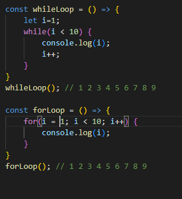

Apuntes Clases JavaScript - NUCBA - pag. 7
Tipos de Bucles - for y while:
while():
El bucle (loop) while solo necesita una condición para que se termine el loop.
No se puede declarar variable en la condición. Distinto a for.
for ()
El bucle (loop) for permite una variable ser declarada, recibir un valor, y se puede aplicar un nuevo valor a cada ciclo.
Entre la declaración y el orden de ejecución del nuevo valor, va la condición para que el bucle termine. O sea, for(i=0; i < 10; i++)
El for es como una evolución del while, o sea más moderno. Es más utilizado por este motivo.

Siguiente página - Bucles >>>>>>>>>>>>>>